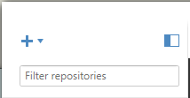
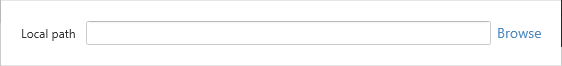
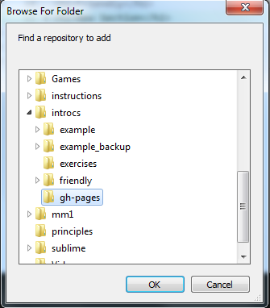
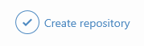
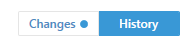
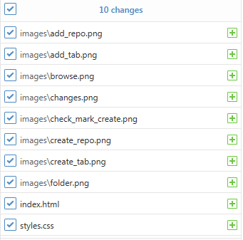
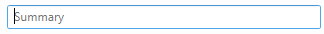
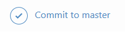

Sign up for a free GitHub account
Open GitHub Desktop
Sign in with your GitHub account info
Add your site as a new Repository
Click the Plus button in the top left corner of the window.
Select the Add tab

Click the Browse button.
Select your project folder.
A warning pops up. Click the create a repositroy link in the warning.

Click the Create repository button.
Make a Commit
Click the Changes
Make sure all of the important site files are checked.
Type a summary of the work you have done. A good summary is short, descriptive, and present tense.

Click Commit to master.
